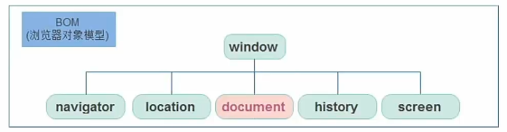

BOM(Browser Object Model)是浏览器对象模型 
window对象是一个全局对象,也可以说是Javascript中的顶级对象
像document、alert()、console.log()这些都是window的属性,基本BOM的属性和方法都是window的
所有通过var定义在全局作用域的变量、函数都会变成window对象的属性和方法
window对象下的属性和方法调用的时候可以省略window